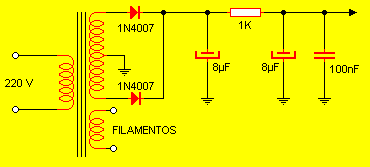

Transmisor Personal de AM
Con este transmisor será posible cubrir un radio de algunas manzanas. Basta con dos lámparas y un puñado de componentes para tenerlo funcionando. Es muy fácil de armar y ajustar.
La señal de audio necesaria para excitar el sistema puede provenir de un amplificador de baja potencia (como un LM386) o de la salida de auriculares de cualquier grabador. Ingresa al sistema por el devanado de baja impedancia del trafo, el cual es del tipo que se empleaba en la salida de radios Spica. Adicionalmente el trafo permite aislar completamente la fuente de señal del transmisor. La primer válvula hace las veces de preamplificadora, mientras que la segunda amplifica RF. Por medio del capacitor CV se establece la frecuencia de salida en la cual el transmisor emitirá.
El único componente que debe ser manufacturado por nosotros es la bobina L. Consiste en 100 vueltas de alambre AWG28 con una tomada en la mitad del devanado (50 + 50 vueltas) sobre un tubo plástico hueco de 1 pulgada de diámetro. Una vez terminada la bobina debe ser rociada con fluxe ú otro barniz que permita fijar las espiras. Para fijarla al chasis puede montarse con una pequeña L metálica.
El capacitor variable es un tandem común de sintonía de un cuerpo.
La fuente de alimentación, que se observa arriba, está formada en torno a un transformador medio raro. Consiste en un primario de 200 V (o la tensión de red del lugar donde empleará el equipo) y dos secundarios separados. Uno de ellos debe tener una tensión de salida de 6.3 V, necesarios para alimentar los filamentos de las lámparas. El otro secundario debe ser de 300 V con punto medio (150 + 150 V), el cual se emplea para la alta tensión de trabajo de las válvulas.
Recuerde que todos los capacitores deben tener una tensión del doble a la de trabajo. O sea que si el trafo entrega 300 V los capacitores de 8µF deben ser de 600 V.
Si coloca el sistema dentro de un gabinete recuerde dedicar tiempo al diseño de la ventilación.
La lámpara de salida puede ser reemplazada por: 6L6, 6AQ5, 6V6, entre otras. Pero siempre tenga presente que el patillaje es diferente, por lo cual tendrá que consultar los manuales (si es que aún existen).